Hi, I am Rajanie. I am a Power Systems AI Engineer at GridCARE, where we work on accelerating time-to-power for AI infrastructure.
I recently finished my PhD at Stanford University, advised by Prof. Ram Rajagopal in the Civil and Environmental Engineering Department. My research applied machine learning to power grid problems: spatial mapping of grid assets, equity in resource distribution, and grid utilization and optimization. My PhD thesis is available here.
Earlier, I earned a B.Tech in Computer Engineering from NIT Kurukshetra and an MS in Informatics from TU Munich, with my MS thesis done at ETH Zurich.
Email: rajanie [at] stanford [dot] edu
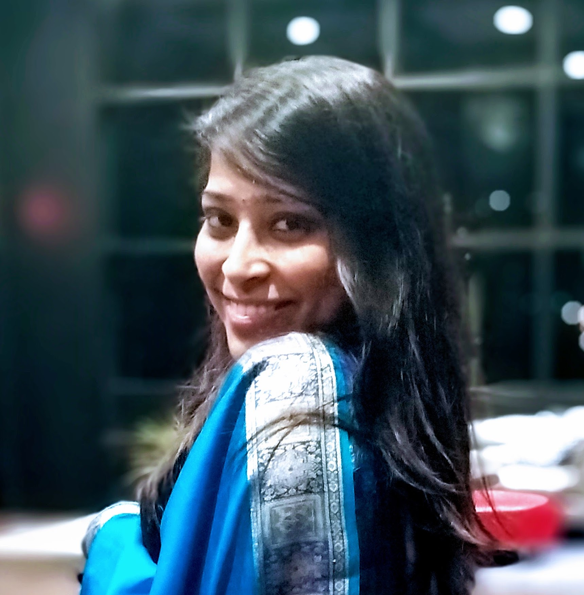
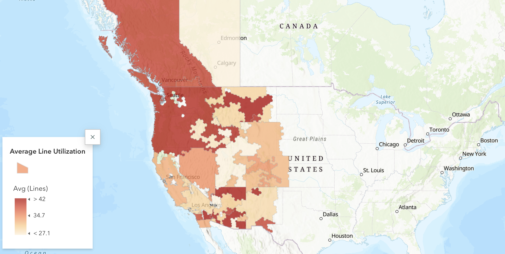
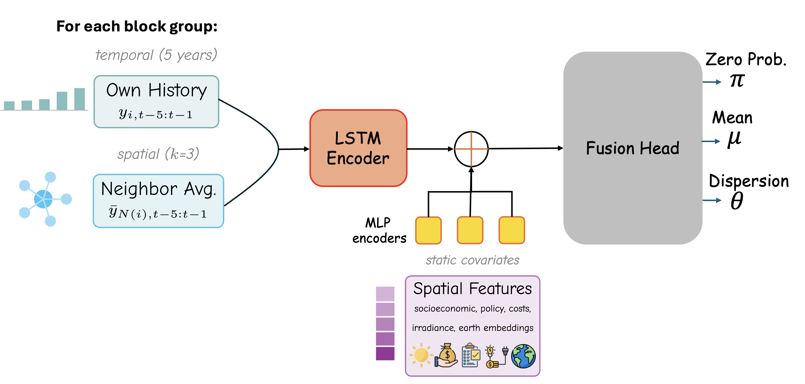
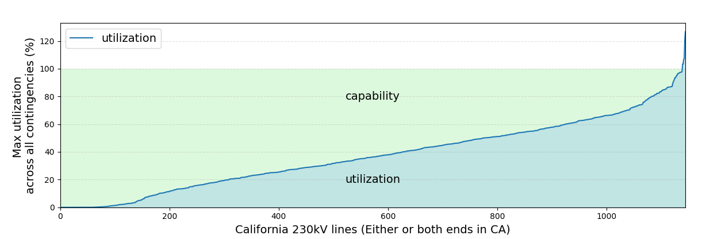
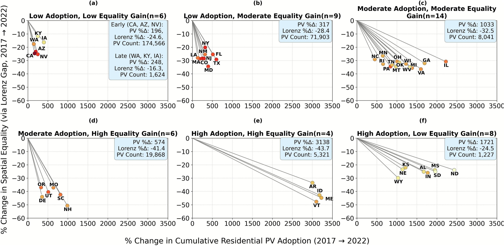
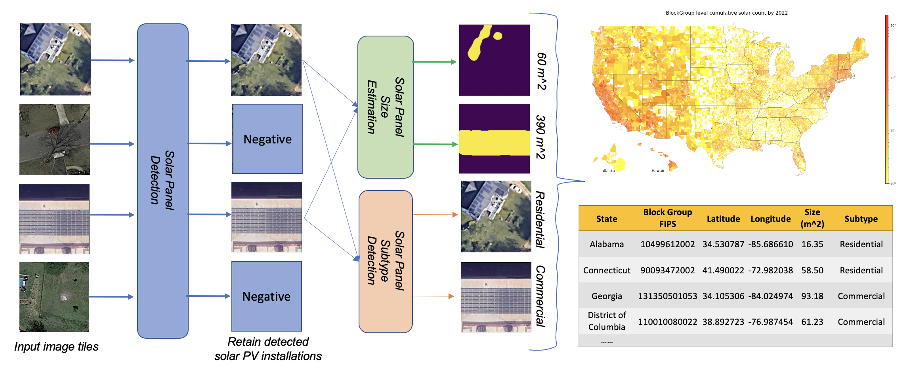
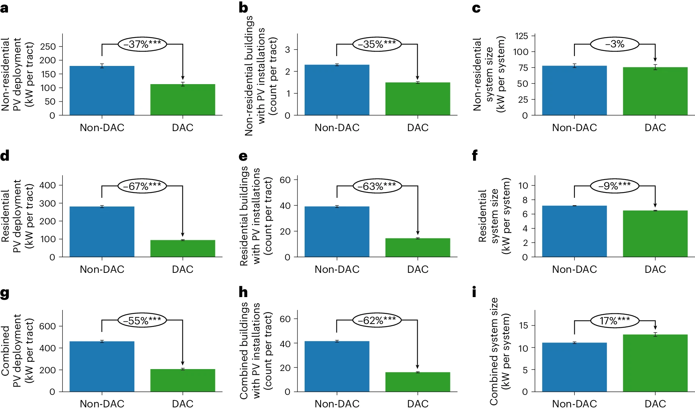
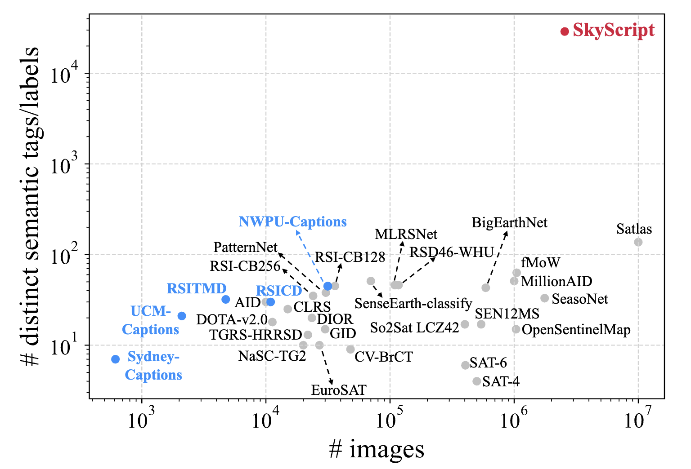
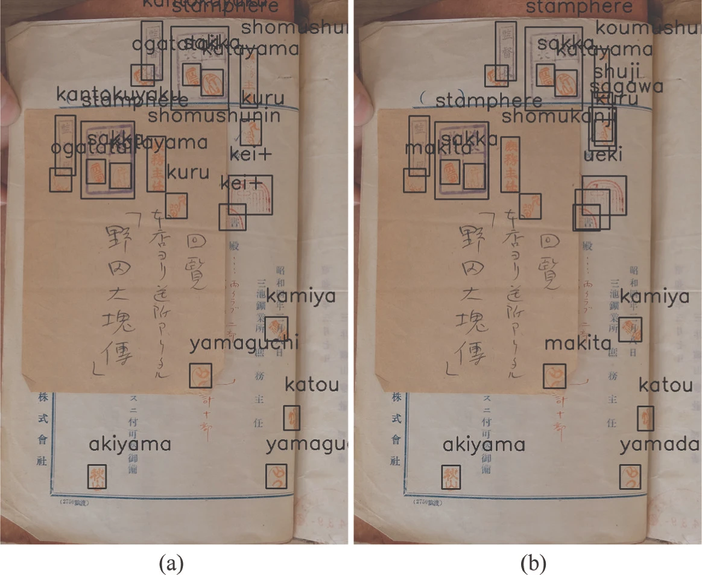
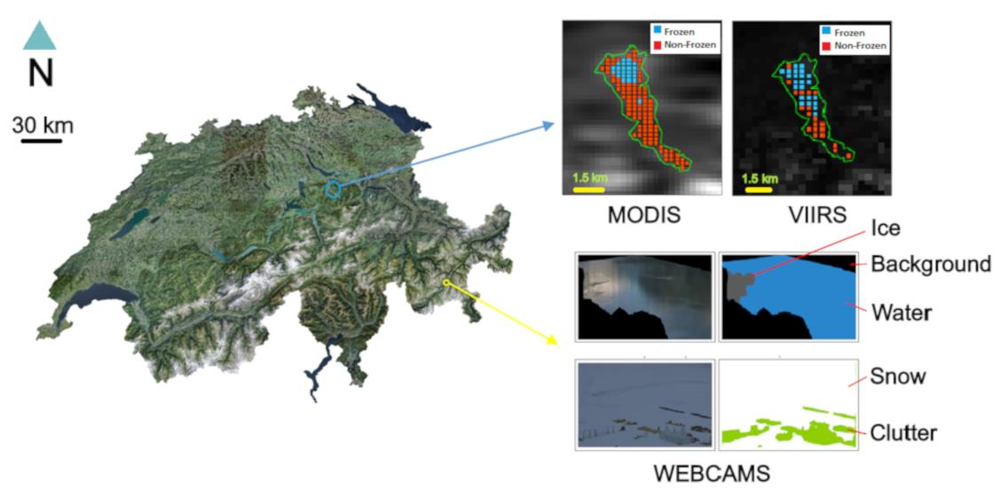
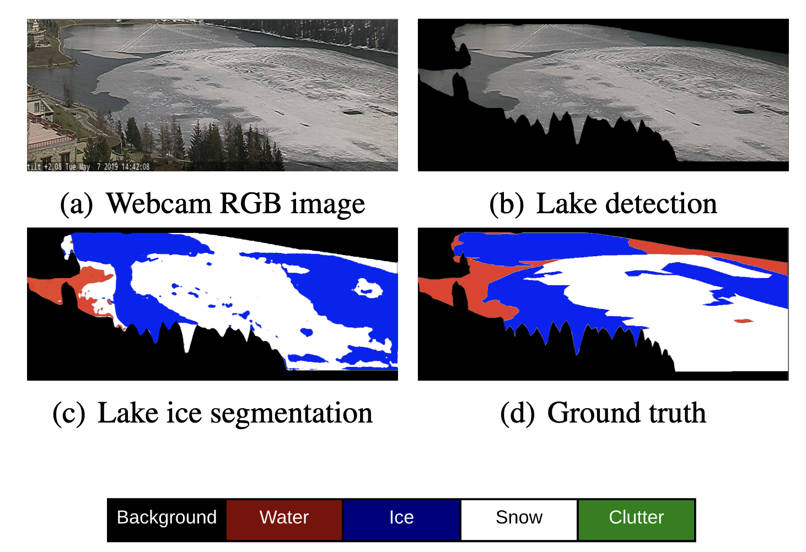
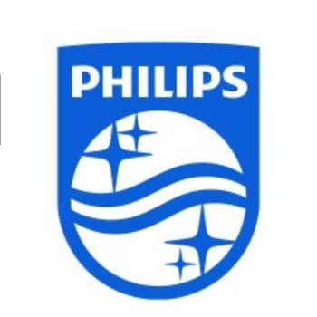
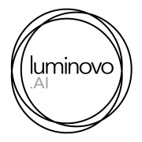